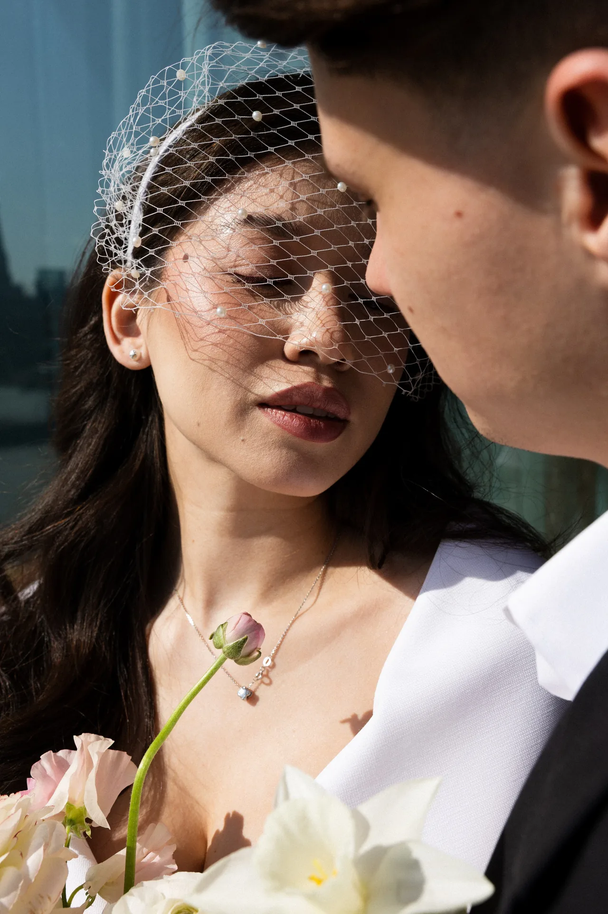
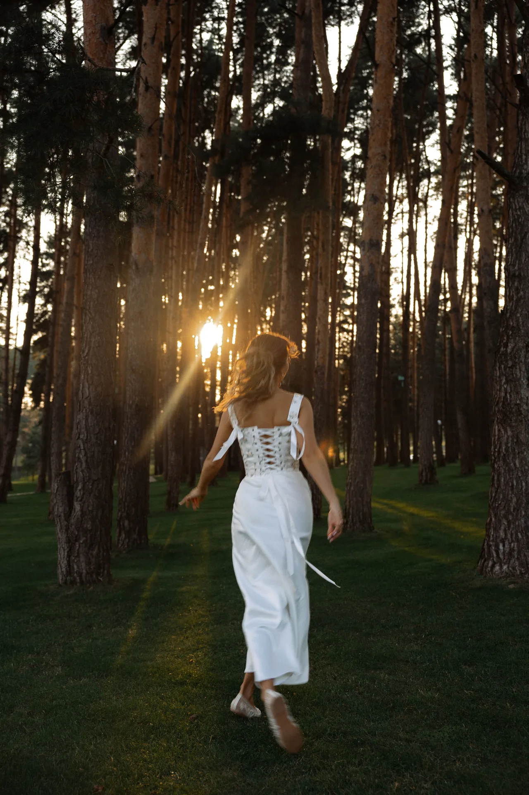

роспись и свадьба
лучшее время с камерой в руках
роспись


день, полный эмоций до краёв




вечер



под конец я взяла кусок торта в контейнере и поехала домой
лучшее время с камерой в руках
день, полный эмоций до краёв


под конец я взяла кусок торта в контейнере и поехала домой